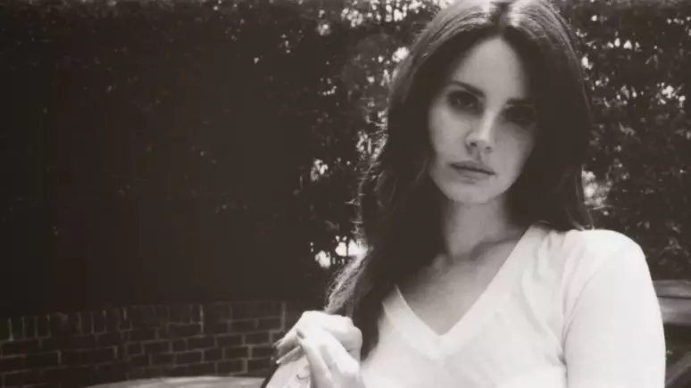
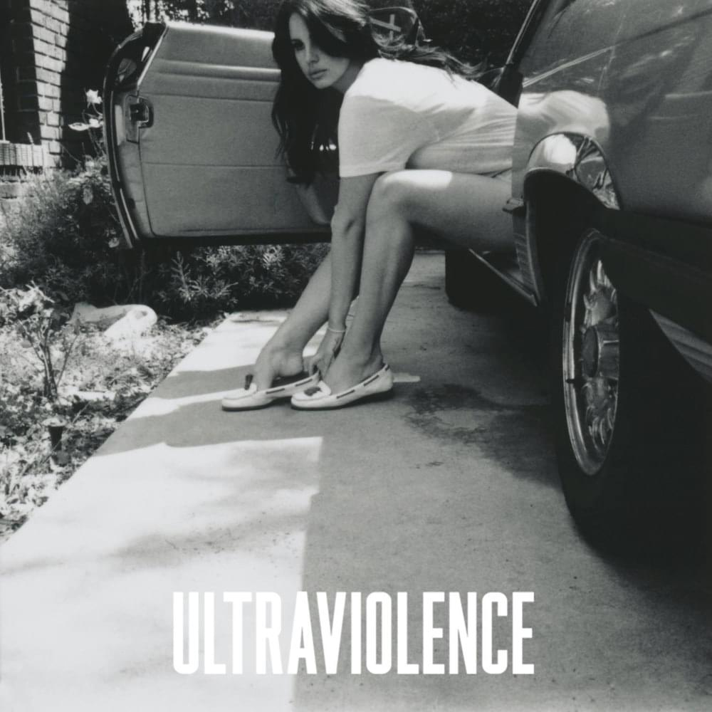

Quando estreiou o álbum born to die?
A cantora teve sucesso de imediato?
A cantora começou sua carreira muito em baixo, aonde tudo começou?
O album Ultraviolence foi considerado um de seus trabalhos mais sombrios e voltado ao rock alternativo, quando ele foi lançado?

Lana quase desistiu da carreira de cantora porque?
ela ganhou o mundo pela sua?
O album Cherry abroda que tema?
Qual foi o seu primeiro nome artistico?
quantos anos ela tem?
Lana teve uma participação sonora em qual desses filmes?
Quais temas ela abroda em suas músicas?

Lana cresceu em Lake Placid, uma pequena cidade de...
E esse foi o Quiz da Lanita!